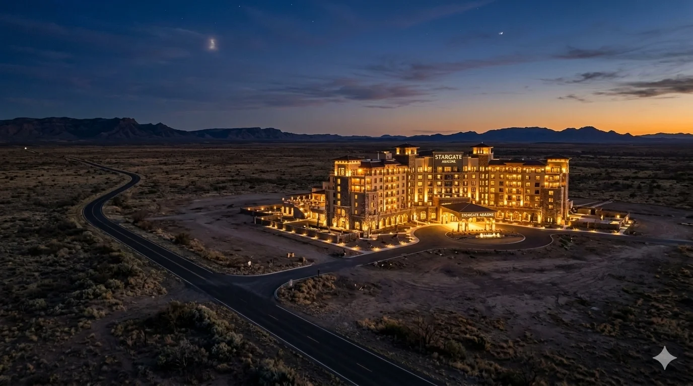

Three things happened in eight days. On February 27, OpenAI announced a $110 billion funding round. Amazon invested $50 billion and secured a commitment from OpenAI to consume 2 gigawatts of Trainium — Amazon’s custom silicon, not Nvidia’s GPUs.[1] Nvidia’s investment shrank from the $100 billion announced in September to $30 billion, with the company’s own filing noting there was “no assurance” the original partnership would be completed.[2]
On March 4, Jensen Huang told the Morgan Stanley conference that further investment in OpenAI is “probably not in the cards.”[3] Same conference, same day: Meta’s CFO said the company plans to expand its custom MTIA chips to training workloads.[4]
On March 6, Bloomberg reported that Oracle and OpenAI have scrapped plans to expand their flagship Stargate data center in Abilene, Texas.[5] The expansion would have grown the Crusoe-developed facility from 1.2 to roughly 2 gigawatts. Financing dragged. OpenAI’s demand forecasts kept shifting. And a detail buried in The Information’s reporting revealed a more fundamental problem: power at the expansion site wouldn’t be ready for approximately a year, by which point OpenAI planned to deploy next-generation Vera Rubin chips rather than the Blackwell GPUs filling the current campus.[5b]
The expansion was an investment in yesterday’s architecture before the first rack powered on, at least from OpenAI’s perspective. Meta, which took the space, reached the opposite conclusion: Blackwell GPUs are exactly what it needs to train models right now. Same building, opposite verdicts. The chip isn’t functionally obsolete. It’s competitively obsolete for the buyer racing to the frontier — and essential for the buyer racing to ship products. Nvidia responded by paying Crusoe a $150 million deposit, then brokering Meta as a replacement tenant to prevent the expansion from filling with AMD chips.[6]
The consensus reads this as either bullish (Meta steps in, demand is insatiable) or bearish (the capex bubble is cracking). Both reads are incomplete. What Abilene actually reveals is something structural: every major player in the AI infrastructure ecosystem is acting out of acute need, and the Abilene data center is the patch of ground where six desperations collided. The deeper question is why the codependence is unstable, and the answer lies in the GPU business model itself. A model that requires your chips to become obsolete every two years may not be the foundation the infrastructure builders want to build on. The ones who can are already building something else.
If you’ve been followingJensen’s COMECON,What a GPU Debt Crisis Would Look Like, andTwo Markets, One Asset, the COMECON framework mapped an Nvidia-centric patron-satellite system sustained through bilateral dependencies. Abilene extends that framework: the codependence is the diagnosis, the GPU treadmill is the mechanism driving it, and the custom silicon bet is the exit some of them are building — if the engineering gap closes before the capital runs out.
OpenAI is desperate for enterprise revenue
OpenAI hit $25 billion in annualized recurring revenue by February 2026, up from $6 billion at end-2024.[7] But the majority of that revenue comes from consumer ChatGPT subscriptions — analyst estimates range from 55 to 63 percent depending on how business-tier subscriptions are classified.[7b] Enterprise is the minority, and its market share among foundation model providers is falling, even as absolute enterprise revenue grows. OpenAI’s enterprise foundation model market share has collapsed from 50 percent in 2023 to roughly 27 percent by late 2025, while Anthropic surged from 12 to 40 percent over the same period.[8] Updated internal projections shared with investors show $218 billion in cumulative cash consumption between 2026 and 2029 — $111 billion more than estimates from two quarters earlier.[9]
That gap between consumer-heavy revenue and enterprise ambition explains why OpenAI accepted Amazon’s deal terms. The Trainium commitment isn’t a compute decision. It’s a business development cost. Amazon’s $50 billion investment, the exclusive third-party distribution rights for OpenAI’s Frontier enterprise agent platform, and the 2 GW Trainium commitment are contractually linked — if the Joint Collaboration Agreement terminates, the $35 billion contingent equity commitment dies with it.[10]
Critically, OpenAI’s earlier $38 billion AWS agreement was for Nvidia GPUs on EC2 UltraServers, not Trainium.[11] The custom silicon commitment arrived only when Amazon put $50 billion on the table. OpenAI didn't commit to Trainium on technical merits. It committed because Amazon demanded it as the price of admission to the world's largest enterprise cloud customer base.
OpenAI can’t get that distribution from Microsoft alone. The relationship has deteriorated from what Altman once called “the best bromance in tech” into something closer to an armed truce. By mid-2025, OpenAI executives were considering publicly accusing Microsoft of anticompetitive behavior.[12] The October 2025 restructuring removed Microsoft’s exclusive status as a cloud provider. Six days later, OpenAI signed its first AWS deal.[13] Bloomberg’s “changing needs” at Abilene reads as a reallocation — from chasing compute to chasing revenue. The gigawatts committed to Trainium are gigawatts that would otherwise be unavailable for an Abilene expansion running Nvidia’s chips.
Amazon is desperate for Trainium validation
AWS has committed $58 billion in direct equity investments across two companies — $8 billion in Anthropic and $50 billion in OpenAI — plus billions more in dedicated infrastructure, like Project Rainier, to secure exactly two frontier lab anchor customers for its custom silicon.[14] By Q4 2025, AWS had deployed more than 1.4 million Trainium2 chips, and the combined custom-chip business (Trainium and Graviton) had exceeded a $10 billion annualized run rate.[15] But Jassy himself told investors the adoption remains concentrated: Trainium is “being used by a small number of very large customers.”[16]
The reason is architectural, not commercial. An independent benchmark of first-generation Trainium for medical image classification found that standard CNN designs — workhorse components of modern computer vision — failed to compile or even load on the hardware. The models that did run cost 3-5x as much as equivalent CUDA instances, even after four separate compiler modifications.[17]
That was Trn1. Trn2 hasn’t solved the problem. An internal Amazon document from July 2025 revealed that Cohere found Trainium 1 and 2 “underperforming” Nvidia’s H100s, with Trn2 access “extremely limited” and plagued by service disruptions. Stability AI reached the same conclusion: Trn2 was “less competitive” on both speed and cost. Amazon’s own employees flagged the technical limitations as “critical blockers” for customers considering switching.[17b] The companies that make Trainium work at scale — Anthropic and OpenAI — do so with billion-dollar incentive packages, dedicated Annapurna Labs engineering teams, and custom Neuron SDK integrations that no normal customer can replicate. That’s why Amazon needs to spend tens of billions to get two customers.
The adoption pattern is stark: headline frontier lab commitments are heavily incentivized through investment dollars. Analyst Charles Fitzgerald called the OpenAI deal structure “circular financing disguised as venture capital” — Amazon moves money to OpenAI’s account, which flows back to AWS as cloud revenue.[18] Amazon’s trailing twelve-month FCF compressed from $38.2 billion to $11.2 billion year over year — a 71 percent decline — as its 2026 capex guidance reached $200 billion.[19]
In 2023, when AWS invested in Anthropic, it was the supplicant — Microsoft had OpenAI, Google had Gemini, and Bedrock had no flagship model. By 2026, the leverage partially inverted: OpenAI came needing enterprise revenue, not compute. But Amazon is still paying an enormous premium. If Trainium were self-evidently competitive, Amazon wouldn’t need to bundle equity investments with silicon commitments. Same chip. Same demand from Amazon. Different supplicant at the table. Both times, gigawatts shifted away from Nvidia — partially with Anthropic, which still trains on GPUs alongside Trainium, and more decisively with OpenAI’s 2 GW commitment.
That premium looks like desperation. But there’s a structural reason the bet may be more rational than the price tag suggests — one that the series has been tracking sinceTwo Markets, One Asset. Nvidia’s incentive is transactional: sell the chip, book the revenue, move on. Every generation — Hopper, Blackwell, Vera Rubin — is simultaneously a product launch and a depreciation event for the prior fleet. This treadmill has produced the most profitable semiconductor company in history — $97 billion in free cash flow in fiscal 2026 and 75 percent gross margins. But what works brilliantly for Nvidia works badly for Nvidia’s customers. Nvidia doesn’t need the customer to extract ROI from a GPU over its useful life. Nvidia needs the customer to buy the next GPU.
Abilene is the treadmill made physical. OpenAI wouldn’t pour concrete for Blackwell racks when Vera Rubin was twelve months away.
AWS’s incentive runs the other direction. Amazon makes money when customers run workloads on Trainium — usage revenue, metered over years. If the customer doesn’t get ROI from the compute, they stop consuming, and Amazon’s revenue stops with them. Every year a Trainium chip runs productively is another year of margin.
Amazon controls both the chip roadmap and the deployment timeline, so Trainium transitions can in principle be managed as capacity upgrades rather than fleet replacements — on a schedule that optimizes customer economics, not chip sales. No generation-to-generation Trainium transition has been tested at scale yet; Trainium2 is the first generation deployed broadly. But the structural logic holds: the depreciation clock ticks differently when the chip designer and the landlord share the same P&L.
Custom silicon won’t win benchmarks against Nvidia’s best, and it doesn’t need to. Its advantage isn’t avoiding obsolescence. It’s giving the operator control over when and whether to upgrade, rather than inheriting a cadence set by the chip vendor’s competitive dynamics. Whether that advantage translates into competitive parity depends on execution — and no custom silicon program has yet matched Nvidia’s performance at the frontier. The incentive alignment is real. The engineering gap remains.
And that gap has a name: CUDA. The entire ML ecosystem — frameworks, libraries, optimization toolchains, developer skills — is built on Nvidia’s software platform. Incentive alignment may favor custom silicon. Ecosystem lock-in still favors Nvidia. The question is which force wins, and on what timeline.
Nvidia is desperate to maintain GPU placement
The $150 million Abilene deposit is not an anomaly. It’s a pattern. Nvidia has deployed over $40 billion in ecosystem equity investments in 2025-2026, creating what MIT Sloan professor Michael Cusumano called a series of deals that are “kind of a wash” — Nvidia invests in stock, the customer buys Nvidia chips with the proceeds.[20] The investment map includes $30 billion in OpenAI, $10 billion in Anthropic, roughly $4 billion in CoreWeave, plus stakes in xAI, Mistral, and at least a dozen others.[21]
The original $100 billion OpenAI investment was structured around deployment milestones — Nvidia would invest as OpenAI brought new GPU-powered facilities online.[22] Once OpenAI committed 2 gigawatts to Trainium, those milestones were structurally undermined. The patron isn’t pulling back because the satellite is going public. The patron is pulling back because the satellite traded GPU gigawatts for enterprise distribution — and the patron has no enterprise distribution comparable to what Amazon offered in return.
Chip vendors routinely compete for socket placement. They don’t usually put down deposits on data centers and recruit the tenants themselves. A company generating $97 billion in fiscal-year free cash flow doesn’t broker real estate deals unless its core distribution model is under threat.[23] Abilene made the threat concrete: the roughly two-year generation cycle that drives Nvidia’s revenue also strains capacity. Not functionally — Blackwell chips will compute profitably for years, and a GPU that starts life training a frontier model can spend years three through six running inference on that model and its successors. But competitively, for the buyer who needs the best available chip for the next training run, last generation’s hardware is a liability the moment the next generation ships. The patron’s product cycle isn’t destroying its installed base. It’s making its installed base someone else’s problem — and every hyperscaler building custom silicon is watching.
Oracle is desperate — and it shows
Oracle bet its entire cloud growth narrative on a single customer, and the strain is visible everywhere. The $300 billion OpenAI Stargate contract represents over 57 percent of Oracle’s record $523 billion in remaining performance obligations (backlog).[24] But at projected scale, if evenly distributed, OpenAI would owe Oracle roughly $60 billion per year — a sum that dwarfs OpenAI’s current revenue. Contract drawdown curves are rarely linear, but even at half that rate, Oracle’s revenue dependency on a single unprofitable customer is unprecedented.
The balance sheet reflects the scale of the wager. Total debt, including lease obligations, has reached approximately $131.7 billion — $108 billion in notes payable alone. Free cash flow is negative $13.2 billion. Oracle announced plans to raise $45-50 billion in 2026 through a mix of equity and debt.[25] The stock sits 56 percent below its September 2025 high, and Bloomberg reported thousands of planned job cuts.[26]
Blue Owl Capital, Oracle’s largest Stargate financing partner, declined to back a planned Michigan campus — the same Blue Owl that had financed the original Abilene site.[27] The refusal wasn’t just about Oracle’s leverage. Blue Owl is in the middle of its own crisis: the firm permanently gated redemptions on a $1.6 billion fund, sold $1.4 billion in loan assets to meet withdrawal demands, and has seen its stock fall more than 50 percent in a year. Over 70 percent of its borrowers by count are software companies — a concentration that spooked investors when AI disruption began threatening software valuations, even though Blue Owl’s management insists software exposure is roughly 8 percent by dollar value.[27b]
Whether the risk is 70 percent or 8 percent depends on which metric you trust. Either way, the firm’s lending portfolio faces AI disruption risk, while its investment portfolio — data centers — requires ever-larger commitments. The financing layer beneath the AI infrastructure boom is cracking from both sides of the trade simultaneously. Abilene may be the first domino, not the last.
The 4.5 gigawatt core Stargate agreement remains intact, and Oracle continues building elsewhere. But the Abilene expansion was supposed to demonstrate that the story was scaling. Instead, it became the first visible casualty of OpenAI’s diversification away from the very partner that staked everything on their relationship.
Microsoft is desperate to outgrow a relationship it still needs
Microsoft went from exclusive cloud provider to one of several, from sole major investor to a participant in a round it didn’t lead. The October 2025 restructuring granted Microsoft a 27 percent stake, IP rights through 2032, and an incremental $250 billion Azure commitment.[28] But it cost Microsoft exclusivity over OpenAI’s compute, and the financial exposure is significant. The company absorbed a $3.1 billion net income hit from OpenAI equity method accounting in Q1, before the restructuring produced a $7.6 billion gain the following quarter — a $10.7 billion swing that illustrates the volatility of the exposure, not its resolution. Forty-five percent of Microsoft’s $625 billion backlog is attributable to OpenAI.[29]
The hedging is systematic. Microsoft hired most of Inflection AI’s staff. Its MAI-1-Preview foundation model shipped in August 2025. Anthropic’s Claude was added to Office 365 Copilot and is now enabled by default for most commercial customers — with GitHub Copilot users primarily selecting Claude Sonnet when given automatic model choice.[30]
There’s a bull case reading of this evidence that the bear case obscures. If Microsoft is becoming the platform through which AI models compete for enterprise distribution, then Claude in Copilot isn’t a concession — it’s the strategy working. The Windows playbook: own the distribution layer, let the application layer commoditize. The model underneath Copilot matters less than the fact that enterprises buy it through Microsoft. Whether that reading holds depends on whether enterprise customers are buying Copilot for the model or for the Microsoft integration — the identity layer, the compliance framework, the billing relationship. If the model is the platform thesis, it collapses when a better model moves. If the integration, it holds regardless.
The developer tools kingdom that Microsoft spent decades building tests the platform thesis from the bottom up, though the results are ambiguous. A March 2026 survey of engineers found Claude Code is now the most-used AI coding tool, overtaking both Copilot and Cursor less than a year after launch — with 46 percent of developers naming it their most-loved tool versus 9 percent for GitHub Copilot. Copilot’s 4.7 million paid subscribers are growing — but growth is driven by enterprise procurement, not developer choice. Startups overwhelmingly choose Claude Code; large enterprises default to Copilot because it’s bundled.[30b] That split actually supports the platform thesis today: enterprises buy through Microsoft regardless of developer preference.
And in March, OpenAI began building a code-hosting platform to directly rival GitHub — Microsoft’s $7.5 billion property — reportedly triggered by persistent GitHub reliability problems, including dozens of service degradations in February 2026 alone.[31]
The company that ignited the AI boom is simultaneously funding OpenAI, competing with OpenAI, distributing OpenAI’s rival through its own products, and watching OpenAI build a competitor to its developer platform. That’s not a partnership. It’s a slow-motion divorce where both parties still share the mortgage.
Meta is desperate in two directions at once
Meta took over an abandoned data center expansion brokered by its chip supplier. It has a $115-135 billion capex budget and an insatiable appetite for compute.[32] But the appetite just got larger. After the Llama 4 “Behemoth” model was repeatedly delayed due to underperformance on benchmarks, and after DeepSeek successfully leveraged Llama’s open weights for distillation, Meta retreated from its open-source-first strategy.[33] Meta officially maintains it will pursue both open and closed models. But the internal evidence — LeCun’s departure, the open-source team’s silencing, the Scale AI acquisition, the TBD Lab’s formation — points in one direction. The company is now developing proprietary closed models — codenamed “Avocado” (text and code) and “Mango” (visual media) — under new Chief AI Officer Alexandr Wang, who came through Meta’s $14.3 billion Scale AI acquisition.[34] Bloomberg reported that Avocado may be “launched as a closed model — one that Meta can sell access to.”[35]
This pivot transforms Meta’s compute requirements. Open-source models could be trained once and released. Closed models that Meta sells access to require continuous training, fine-tuning, and massive inference infrastructure — and they must stay competitive with OpenAI and Google on every benchmark, or the commercial offering doesn’t compete. The question Wall Street hasn’t answered: is Meta building closed models to serve Facebook, Instagram, and Ray-Ban glasses internally, or is it entering the commercial LLM market? If the latter, Meta just became a direct competitor to both OpenAI and Google, while simultaneously being Nvidia’s most important remaining GPU customer and taking over OpenAI’s abandoned data center.
The two deals Meta signed in a single week in February make the scale explicit. First, a multi-year agreement with Nvidia for millions of Blackwell and Rubin GPUs. Then, a 6 gigawatt AMD deal worth an estimated $60-100 billion — with AMD issuing Meta warrants for up to 160 million shares, roughly 10 percent of the company, at one cent per share.[36]
The GPU dependency won’t last forever, but for now, it only solves half the workload. Meta’s custom MTIA chips deliver 44 percent lower total cost of ownership for inference, but they use LPDDR5 memory rather than HBM, an architecture fundamentally unsuited for frontier model training.[37] For inference, MTIA is the incentive-alignment thesis in action: Meta designs the chip, operates the infrastructure, and captures the usage value — the same logic as Trainium, except MTIA is already deployed at scale across 3 billion users. The limitation is training: Meta’s CFO confirmed plans to expand MTIA to training, but provided no timeline.[38]
Meta needs all the Nvidia GPUs it can buy right now to train closed models that will compete with the companies whose abandoned data center it’s moving into. The replacement tenant has an expiration date — but first, it has an addiction to feed.
The guests who didn’t check in
Two players are conspicuously absent from the Abilene standoff — and the contrast is instructive.
Google has seven generations of TPUs, trained Gemini 3 reportedly without a single Nvidia GPU, and grew Cloud revenue 48 percent year-over-year.[39][40][41] It isn’t fully independent — it invested billions in Anthropic and struck a TPU deal to keep Claude on Vertex AI — but its entanglements are strategic bets, not survival dependencies. The company best positioned for a future of custom silicon is the onenotat the center of the $110 billion deal. That tells you something about what the current market values — and it isn’t the best chips.
Then there’s Anthropic. No equity entanglement with Nvidia. No Stargate dependency. No exclusive cloud deal. Anthropic trains on both AWS Trainium and Google TPUs, distributes through Microsoft Copilot, and maintains direct enterprise sales — all simultaneously.[46] It surged from 12 percent enterprise market share in 2023 to 40 percent by late 2025 — now the category leader — with revenue reaching approximately $19 billion in annualized run rate, roughly 80 percent enterprise.[8][47] Claude Code hit $2.5 billion in annualized revenue within nine months of launch, driven by individual developers paying with personal credit cards before enterprise procurement caught up — a pattern that will look familiar to anyone who watched AWS grow inside Fortune 500 companies in 2010.[47b]
The test came in late February, when the Pentagon demanded Anthropic remove restrictions on autonomous weapons and mass domestic surveillance. Anthropic refused. The administration designated it a supply chain risk — a label previously reserved for foreign adversaries — even as the Pentagon continued using Claude in the Iran campaign through Palantir.[47d] A company locked into a single cloud provider, a single distribution partner, or a single funding source cannot afford that fight. Anthropic could, because its dependencies are diversified enough that no single counterparty’s displeasure is existential.
Anthropic didn’t check into Hotel Abilene because it doesn’t need to. It has rooms in every hotel on the strip, but no lease on any of them. This isn’t independence — it’s diversified dependency, and if all three cloud landlords deprioritized Claude simultaneously, Anthropic would feel it. But in a landscape where every other player’s survival depends on a single counterparty relationship, diversification of dependency is the closest thing to structural freedom that exists.
The systemic exposure
Moody’s recently flagged that the top five U.S. hyperscalers have accumulated $662 billion in future data center lease commitments that sit entirely off their balance sheets — equal to 113 percent of their adjusted debt.[42]
Morgan Stanley identified that OpenAI alone represents roughly $330 billion of the $880 billion in total remaining performance obligations (backlog) tied to Microsoft, Oracle, and CoreWeave.[43] A single company’s ability to honor its commitments underpins roughly 38 percent of the contracted AI infrastructure pipeline. Jim Chanos, who shorted Enron, compared AI infrastructure spending to fracking — an industry where steep decline curves weren’t reflected in accounting until it was too late.[44]
Nvidia’s $95.2 billion in supply commitments — nearly doubled in a single quarter[45] — only make economic sense if the whole web holds. The customers with the balance sheets to sustain the pace — Amazon, Meta, Google — are the same ones investing billions in custom silicon to build their own infrastructure. The customers who can’t build their own — the neoclouds, the startups, the sovereign AI projects — will keep buying GPUs. They’re also the ones carrying the debt loads the COMECON series has been tracking.
CoreWeave — the neocloud the series flagged inTwo Markets, One Asset— has lost 61 percent of its value since its high and crashed nearly 20 percent in a single session after reporting wider losses and $30-35 billion in 2026 capex guidance. Blue Owl couldn’t find a lender for CoreWeave’s $4 billion Lancaster data center. The neocloud model requires perpetual access to cheap capital. The capital is no longer cheap. The patron’s future increasingly depends on the guests least able to pay, while the guests most able to pay are drawing up blueprints for the exit.
The bear case writes itself. The bull case deserves honest engagement. OpenAI’s annual revenue hit $25 billion, up 17 percent in two months. Its partnerships with McKinsey, BCG, Accenture, and Capgemini are designed to accelerate enterprise sales.[48] If enterprise revenue grows fast enough, the spending pays for itself, the commitments get honored, and the web holds.
The question is whether it grows fast enough. Oracle has signed $300 billion in future commitments. Microsoft has signed $625 billion. Those contracts need enterprise AI spending to arrive at scale by 2027. But today, only 37-45 percent of OpenAI’s revenue comes from enterprise customers — and at that rate, the $218 billion the company plans to spend through 2029 doesn’t get funded until closer to 2029. Two years late is survivable for Amazon and Microsoft. It may not be survivable for everyone else in the web.
The tripwire to watch: if a neocloud restructures its GPU-backed debt, or if a major Stargate financing partner fails to close a committed facility, the gap between 2027 backlogs and 2029 revenue could become a credit event.
Trace the chain backwards from the Abilene data center, and the interlocking becomes visible. As Anthropic captures enterprise market share, OpenAI’s enterprise position erodes.[8] OpenAI, desperate for distribution, accepts Amazon’s terms — $50 billion in exchange for 2 gigawatts of Trainium and exclusive third-party agent distribution.[10] Those gigawatts come out of Nvidia’s addressable market. The Abilene expansion, which depended on OpenAI’s demand for Nvidia-powered capacity, collapses.[5] Nvidia deposits $150 million and brokers Meta as a replacement tenant to keep AMD out of a facility Nvidia helped finance.[6] Meta takes the space because its closed-source pivot requires every GPU it can find to train proprietary models that will compete with the companies whose abandoned facility it’s moving into.[33] Six companies, each acting rationally, each responding to the move before it, each tightening the web. No conspiracy. No coordination. Just codependence producing its own momentum.
Hotel Abilene
The COMECON series described a patron-satellite system where bilateral dependencies prevent any member from leaving. Abilene extends the model and earns a different metaphor.
Interdependent ecosystems aren’t inherently fragile. The Wintel alliance — Intel, Microsoft, and OEMs — was a web of mutual dependency that lasted three decades. But the Wintel ecosystem was funded by external revenue: enterprises and consumers bought PCs, and that money flowed through the chain.
The AI infrastructure ecosystem is different. Nvidia invests in customers who buy Nvidia chips. Amazon invests in companies that spend on AWS. OpenAI sells commitments against future revenue to fund present infrastructure — and the counterparties accepting those commitments are the same companies cycling capital through the first two loops. The capital circulates, but the external revenue that would validate the cycle — enterprise AI spending at scale — hasn’t arrived at the rate the commitments assume it will. Healthy ecosystems are sustained by external revenue. This one is sustained by internal capital recycling. That’s the difference between interdependence and codependence.
The GPU obsolescence treadmill makes the recycling worse. Every two-year chip generation forces another round of infrastructure investment, another round of equity commitments to fund it, another round of capital circulating through the system without external revenue to validate the loop.
And within the codependence, an asymmetry is emerging. The chip seller’s incentive — sell, obsolete, sell again — is diverging from the infrastructure operator’s incentive — deploy, run productively, generate usage revenue for years. Abilene is where that divergence became visible. Amazon, Google, Meta — each is building toward a model where the chip designer and the infrastructure operator are on the same side of the customer’s ROI. That’s not just a procurement decision. It’s a structural exit from the GPU treadmill — and it’s the reason the patron deposited $150 million in a West Texas data center it doesn’t own.
Six companies — each acting rationally, each hooked on a different fix, each imprisoned by a device of its own making — collided in a single data center transaction in West Texas. The patron reached for its checkbook. But the checkbook can’t fix what Abilene exposed: the AI infrastructure boom is sustained not by any single company’s strength, but by the interlocking addictions of all the companies involved. OpenAI is addicted to other people’s money. Amazon is addicted to validation. Nvidia is addicted to placement. Oracle is addicted to a single customer. Microsoft is addicted to a partnership it’s outgrowing. Meta is addicted to compute, and it’s simultaneously trying to replace it. They stab at the dependency with custom silicon, multi-cloud deals, and $110 billion funding rounds.
Welcome to Hotel Abilene. The rooms are enormous. The rates are staggering. You can check out any time you like — but the collaboration agreement terminates your equity, the backlog unwinds your revenue forecast, and the supply commitments you signed last quarter don’t care that you’ve changed your mind. Some of the guests are building their own hotels. None of them has finished construction yet. And the ones who can't build? They can never leave.
Notes
[1]OpenAI press release, February 27, 2026. Amazon invests $50 billion; OpenAI commits to approximately 2 GW of Trainium capacity, including Trainium3 and next-generation Trainium4. AlsoTechCrunch.
[2] Nvidia 10-Q filing, Q3 FY2026: “There is no assurance that we will enter into definitive agreements with respect to the OpenAI opportunity or other potential investments, or that any investment will be completed on expected terms, if at all.”CNBC, November 2025.Fortune: CFO Kress confirmed the deal “still” wasn’t “definitive” two months after announcement. Original $100 billion commitmentannounced September 2025; WSJ reported January 2026 the agreement was “on ice.” Finalized at $30 billion.
[3] Jensen Huang,Morgan Stanley TMT Conference, March 4, 2026. Also confirmed Nvidia’s $10 billion Anthropic investment would likely be its last.
[4] Meta CFO Susan Li, Morgan Stanley TMT Conference, March 4, 2026.Bloomberg: Meta expects to expand custom silicon “eventually to training AI models.”
[5] Bloomberg,“Oracle and OpenAI End Plans to Expand Flagship Data Center,”March 6, 2026.
[5b] Power delay and Vera Rubin pivot:The InformationviaData Center Dynamics, March 2026. “Power will also not be ready at the site for a year, by which point OpenAI hopes to deploy Nvidia Vera Rubin chips instead of the Blackwell GPUs going to Abilene, so would rather do so at a new campus.” OpenAI infrastructure director Keith Heyde, a proponent of in-house data centers, left the company earlier in 2026.Unite.AIconfirmed the Vera Rubin pivot and noted Texas lawmakers have raised concerns about data centers driving grid load forecasts faster than utilities can deliver new capacity.
[6] Bloomberg, March 6, 2026. Nvidia paid $150 million deposit to Crusoe and facilitated Meta discussions. Bloomberg’s sources: Nvidia “became involved to ensure its products would still fill the expanded data center rather than that of rival Advanced Micro Devices.” The AMD risk was concrete: Meta had signed a 6GW AMD deal with extraordinary equity warrants two weeks earlier (see fn 36), and Crusoe was separately arranging a $300M AMD-backed loan for a new Ohio data center (The InformationviaStocktwits). Nvidia is also a Crusoe investor (Series D and E), but investor status alone doesn’t dictate chip procurement. The deposit is single-source Bloomberg reporting, attributed to anonymous sources.
[7]PYMNTS, February 2026, andSaaStranalysis. OpenAI ARR tripled from ~$6B (end 2024) to $12B+ (mid-2025) to $25B+ (early 2026).
[7b] Revenue breakdown estimates fromFutureSearchandNotorious PLG. FutureSearch allocates ~55% to consumer Plus/Pro/Go, ~8% to Teams, ~21% to Enterprise, ~15% to API. The range depends on classification: Teams subscriptions are consumer-facing but purchased by businesses. OpenAI does not publicly disclose segment breakdowns. B-tier analyst estimates.
[8] Enterprise foundation model market share fromMenlo Ventures 2025 State of Generative AI in the Enterprise, December 2025: Anthropic 40%, OpenAI 27%, Google 21%. Prior trajectory: OpenAI 50% (2023) → 34% (2024) → 27% (late 2025). B-tier analyst estimates based on a survey of 150+ technical leaders. Disclosure: Menlo Ventures is an investor in Anthropic.
[9]Sherwood News, reporting on internal projections shared with investors. $218 billion cumulative cash consumption 2026-2029, up $111 billion from prior projections.eMarketercites Deutsche Bank's estimate of $143 billion cumulative negative FCF through 2029.Fortunereported OpenAI does not expect profitability until 2029-2030.
[10]GeekWire, March 2, 2026, reviewing SEC filings. The JCA itself is not public.
[11] OpenAI’s November 2025 $38B AWS deal specifiedhundreds of thousands of Nvidia GB200 and GB300 GPUs on EC2 UltraServers. Trainium commitment came exclusively with the February 2026 $50B equity deal.
[12]TechCrunch, June 2025, reporting on WSJ investigation.
[13]GeekWire, reviewing internal documents. Restructuring closed October 28, 2025. AWS deal signed on November 3.
[14] Amazon’s Anthropic investment: $1.25B (Sept 2023), expanded to $4B (March 2024), additional $4B (Nov 2024), totaling $8B.Amazon press release. OpenAI: $50B ($15B immediate, $35B conditional).
[15] Trainium2 deployment:Amazon Q4 2025 earnings release, February 2026: “With more than 1.4 million Trainium2 chips deployed, this proprietary hardware now supports the majority of Amazon Bedrock usage.” Custom chips business (Trainium + Graviton) exceeds a $10B annualized run rate, growing at triple-digit YoY.
[16] Andy Jassy, Amazon Q3 2025 earnings call, October 2025, viaConstellation Research: “Today, Trainium is being used by a small number of very large customers, but we expect to accommodate more customers starting with Trainium3.” Named customers beyond Anthropic and OpenAI: Karakuri, Metagenomi, NetoAI, Ricoh, Splash Music, Decart, poolside, and Hugging Face — perAWS customer page.
[17]medRxiv preprint, December 2025: “AWS Trainium vs NVIDIA CUDA for Medical Image Classification.” Key findings: (1) Trainium matched CUDA accuracy for compatible architectures; (2) “modern CNN architectures using depthwise convolutions and LayerNorm fail to compile or load on Trainium due to hardware constraints”; (3) “Trainium is 3–5× more expensive than CUDA for CNN training even with correct instance sizing.” Trn1-generation hardware. B-tier (academic preprint, not peer-reviewed).
[17b] Trn2 production evidence:Business Insider, November 2025, reporting on a July 2025 internal Amazon document marked “confidential.” Cohere found Trainium 1 and 2 “underperforming” Nvidia H100s; Trn2 access was “extremely limited” and “plagued by frequent service disruptions”; performance challenges were under investigation by Annapurna Labs with “limited” progress. Stability AI called Trn2 “less competitive” in terms of speed and cost. Amazon employees internally described technical limitations as “critical blockers” for customers considering switching;SemiAnalysisreported that Trainium3 will launch without the software mode most ML researchers need to use the chip’s full capabilities, with support not expected until mid-2026. Full disclosure: my hands-on experience porting models to Inf2/Trn1/Trn2 at Hugging Face and Arcee AI is consistent with these findings — the compilation failures and SDK friction are real and reproducible.
[18] Charles Fitzgerald quoted inFortune, December 2025. Moor Insights analyst Anshel Sag acknowledged “there’s a lot of circular economics happening right now.”
[19] Amazon Q4 2025 earnings release,SEC filing, February 5, 2026: “Free cash flow decreased to $11.2 billion for the trailing twelve months... This compares to free cash flow of $38.2 billion for the trailing twelve months ended December 31, 2024.” The 71% decline was driven by a $50.7B YoY increase in property and equipment purchases. 2026 capex guidance of approximately $200 billion from the same earnings call.
[20] Michael Cusumano, MIT Sloan, quoted inFortune, September 2025.
[21] Nvidia ecosystem investments compiled fromTechCrunchandAI Funding Tracker. Total exceeds $40 billion across 2025-2026.
[22]CNBC: the September 2025 deal “outlined a structure where Nvidia would invest in OpenAI over several years as it brought new supercomputing facilities online.” The $30 billion investment “is not tied to any deployment milestones.”
[23]Nvidia Q4 FY2026 earnings, February 25, 2026. Free cash flow: $35 billion in Q4, $97 billion for the full fiscal year.
[24] Oracle RPO and OpenAI concentration: Oracle reported $523B RPO as of Q2 FY2026. The $300B OpenAI/Stargate contract represents >57% of total. Oracle does not officially disclose customer-level RPO breakdowns; this is inferred from public deal terms andanalyst estimates.
[25]Oracle announcement, February 1, 2026. Debt figure fromIG analysis. FCF from the most recent quarterly filing.
[26] Oracle stock decline and job cuts fromBloomberg,CNBC, andBarchart. Stock at ~$152.96 vs. $345.72 September high. Additionally, five-year credit default swaps climbed to the highest level since 2009; securities fraud class actions have been filed alleging misleading AI revenue disclosures.
[27] Blue Owl Capital declining Michigan campus:24/7 Wall St.andLatitude Media, January 2026, citing FT reporting. Blue Owl private credit crisis: gated redemptions on OBDC II fund after 200% surge in withdrawal requests (Bloomberg); sold $1.4B in loan assets to meet demands (CNBC); stock down 50%+ in the past year. Mohamed El-Erian compared it to Bear Stearns credit funds in 2007. Treasury Secretary Bessent expressed concern about systemic migration to the regulated financial system. Blue Owl also reportedly faced financing challenges for a $4B CoreWeave data center in Lancaster, PA (Bisnow), a claim Blue Owl denied.
[27b] The “70%+” software concentration: CNBC reported “more than 70% of its loans are to [software companies]” citing Blue Owl executives’ earnings call comments. However, Blue Owl’s CFO separately stated that total software exposure is approximately 8% by dollar value across AUM, because software loans tend to be smaller individually. The discrepancy between company count (70%+) and dollar exposure (~8%) is material.BenzingaandSharecafereport the management response.
[28] October 2025 restructuring terms:Fortune. Microsoft received a 27% stake, IP rights through 2032, and a $250B Azure commitment.
[29] $3.1B net income loss from OpenAI equity method accounting was Q1 FY2026 (quarter ending September 2025), perNext Platform. In Q2 FY2026, the OpenAI investment generated a $7.6B net gain from restructuring. 45% backlog concentration disclosed in Q2 FY2026 earnings fromFortuneandFierce Networkreporting.
[30] Inflection hire:DeepLearning.AI. MAI-1-Preview:CNBC. Claude in Copilot is enabled by default:UC Today. GitHub Copilot Claude preference fromWindows Centralreporting.
[30b]The Pragmatic Engineer, “AI Tooling for Software Engineers in 2026”, March 2026. A survey of software engineers found Claude Code is the most-used AI coding tool, overtaking GitHub Copilot and Cursor less than a year after launch. “Most loved” tool: Claude Code 46%, Cursor 19%, GitHub Copilot 9%. On the enterprise/developer split: “Huge companies (10K+) more likely to use Copilot (56%), tiny startups mostly go with Claude Code (75%)... enterprise procurement, not individual preference, is behind this divergence.” GitHub Copilot paid subscribers: 4.7 million, up 75% YoY, perMicrosoft Q2 FY2026 earnings. Claude Code reached $2.5B annualized revenue by February 2026, with 4% of all public GitHub commits now generated by Claude Code per Anthropic’s Series G materials.
[31] OpenAI GitHub rival:WinBuzzer, March 4, 2026. Single-source reporting (The Information); project may not ship. 37 GitHub incidents in February 2026 from same report.
[32]Meta Q4 2025 earnings call, January 2026. Capex guidance: $115-135 billion for 2026.
[33] Llama 4 Behemoth shelved, DeepSeek cloning concerns, and open-source retreat:Digitimes, December 2025, andWinBuzzer, December 2025. Yann LeCun’s departure and Bloomberg's marginalization of open-source advocates.
[34] “Avocado” (text/code) and “Mango” (visual media) proprietary models:WinBuzzer, December 2025. Alexandr Wang as Chief AI Officer through the $14.3B Scale AI acquisition:Advisor Perspectives/Bloomberg.
[35]Bloomberg, December 10, 2025: Avocado “may be launched as a closed model — one that can be tightly controlled and that Meta can sell access to.” The TBD Lab is reportedly using third-party models, including Google’s Gemma, OpenAI’s models, and Alibaba’s Qwen, for distillation during training.
[36] AMD-Meta deal:AMD press release, February 24, 2026. 6 GW deployment warrants for up to 160 million shares at $0.01/share. Details fromTom’s Hardware.
[37] MTIA TCO advantage (44%) and LPDDR5 architecture fromACM/ISCA paperon Meta’s second-generation chip. LPDDR5 vs. HBM limitation for training is an architectural constraint — MTIA was designed for inference workloads.
[38] Meta CFO Susan Li, Morgan Stanley TMT Conference, March 4, 2026.Bloomberg: Meta expects to expand custom MTIA silicon “eventually to training AI models” but provided no timeline.
[39] TPU v7 Ironwood TCO advantage fromSemiAnalysisanalysis. Approximately 44% lower TCO than Nvidia GB200 per their benchmarking.
[40] Gemini 3 reportedly trained entirely on TPU infrastructure without Nvidia GPUs.WION Newsconfirmed Google’s public statements that “Gemini is not dependent on Nvidia GPUs for its core training.” AlsoDecoding Discontinuity: “Gemini 3 represents the first frontier model trained entirely on Google’s Tensor Processing Units.” Google has not issued a formal press release with this claim, but it is consistent with Google’s stated TPU-first strategy, Ironwood deployment timeline, and Google Cloud CEO Thomas Kurian’s prior statements toDCDabout training Gemini across TPU clusters.
[41] Alphabet Q4 2025 earnings: Google Cloud revenue grew 48% YoY to $17.7B. $240B backlog doubled YoY. Capex guidance up to$185B for 2026.
[42] Moody’s, February 2026. $662 billion in future data center lease commitments not yet commenced, off-balance-sheet. Equal to 113% of adjusted debt.Yahoo FinanceandBisnow.
[43] Morgan Stanley estimate: OpenAI represents approximately $330 billion of $880 billion total RPO across Microsoft, Oracle, and CoreWeave.Fierce Network.
[44] Jim Chanos fracking comparison fromPaul Krugman / Substack interview. Sequoia’s David Cahnupdated “AI’s $600B Question”noting supply chain sources say “the customer’s customer is not as healthy as they’d wish.”
[45]Nvidia Q4 FY2026 earnings release, February 25, 2026. Supply commitments rose from $50.3B (Q3) to $95.2B (Q4). AlsoFortuneandFuturum.
[46] Anthropic’s multi-cloud positioning: trains on AWS Trainium (Amazon press release, November 2024); struck a multibillion-dollar deal with Google for up to 1 million TPUs (SiliconANGLE, October 2025); Claude distributed through Microsoft 365 Copilot (UC Today); maintains direct enterprise sales through claude.ai and API.
[47] Anthropic’s enterprise revenue share is estimated at approximately 80%, perSemiAnalysisand industry reporting. Anthropic’s ARR reached $9B by the end of 2025 and surged to approximately $19B by early March 2026, perBloombergandWinBuzzer. Enterprise customers account for the majority of revenue. B-tier estimates; Anthropic does not publicly disclose financials.
[47b] Claude Code reached $2.5B annualized revenue by February 2026, more than doubling since January 1, per Anthropic’s Series G materials reported byWinBuzzer. 4% of all public GitHub commits now authored by Claude Code, double from one month prior. Bottom-up adoption pattern: Claude Code initially available only through individual Pro/Max subscriptions; enterprise bundlinglaunched in August 2025after sustained developer demand. Scott White, Anthropic product lead: “This is the most requested feature from our business team and enterprise customers.” ThePragmatic Engineer survey(March 2026) confirms the pattern: 75% of startups choose Claude Code vs. 56% of 10K+ companies defaulting to Copilot.
[47d] Pentagon standoff timeline: July 2025: Anthropic signs $200M Pentagon contract with explicit restrictions on autonomous weapons and mass domestic surveillance. January 2026: Hegseth issues “any lawful use” mandate. February 27: deadline passes; Trump orders government-wide ban; Hegseth designates Anthropic a supply chain risk. The same evening, OpenAI announces aclassified systems deal. March 3: Altman admits timing“looked opportunistic and sloppy”. Pentagon is still using Claude in Iran operations through Palantir as of March 6. Amodei internal memo: administration doesn’t like Anthropic because it hasn’t donated or offered “dictator-style praise to Trump” (reported byCNBC, citing The Information). Negotiations reportedly resumed perFT, March 5. Microsoft confirmed Claude products remain available to non-Defense customers through M365, GitHub, and AI Foundry (CNN).
[48] OpenAI"Introducing Frontier Alliances,"February 23, 2026. Multi-year partnerships with McKinsey & Company, Boston Consulting Group, Accenture, and Capgemini to deploy OpenAI's Frontier enterprise platform. Also,CNBCandTechCrunch.